chasing stars
shooting star
i make so many mistakes daily that i often sing this song like it was me
describing my mistakes fuckin sticking in eevry cell of my head like i often
forget the gum will stick forever, so many hands had touched my chest and my back
if i didnt said that you were a shadow if i didnt implied you are absent if i wasn't
sure that you are beyond reach so far away and if i embrace you every night i wouldn't
had so much gum in my hair, i wouldnt be stoping every now and then to say this: "🙋♂️ please,
i know you can hear me, i know you can see me and feel my heart, so therefore i request you
politely to touch my heart with your spirit in your hand, please"... i have so much gum to solve...
sometimes i feel this world is a giant desert full of structures, full of possible futures,
everywhere i go i could dream about a huge universe for my soul to fill complete and clean.
i feel free and ready to go anywhere, i sometimes get near the warm shadow and pray for it to
remain eternal and it feels so special. when i get near and let it flow through my soul millions
of little sacred pieces of light fly around me, they are like butterflies, like fairies,
like stars out of my heart, like a drawing i invested my whole spirit in, like they feed my soul
and allow me to fly, dream, shine, open my wings, taste her mouth, touch her voice with my dick,
and for a while she kisses my body, my self esteem, my whole spirit and universe. they fly around
and see they are free, they fly free in circles over the same stories over and over its never ending
cycle becomes a crazy-lovely-shining plan that moves souls forever
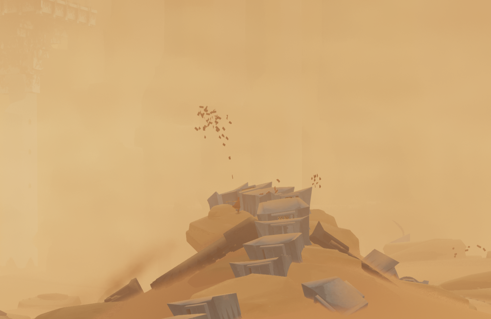
eventually they fly away to remind me that, there are missing pieces, that there's
this giant broken path only they can build, as long as they remain free, they can fly,
as long as they can fly, they will build it over a satin that only can feel, only i
can see, i only can perceive, only i will experience and they try to build it so only
i can fly with them around me, in a beautiful circle playing master-slaves, playing air and mouth,
playing wings and bones, muscles and sweat, heat and kisses, and its they only want me to
walk over the sky feeling their breeze in my mouth and the satin in my feet, and i tell you
the adrenaline is over the limits, feeling my heart beat at maximum speed, see 7 slaves,
see the room, their hearts, their voices in an absurd ideal of passion, sex, milk, caresses,
soft touch, soft care, and slowly fall asleep and dream with this stars... feel that i emits light
atoms bigger than tears of blood, heavier and faster.
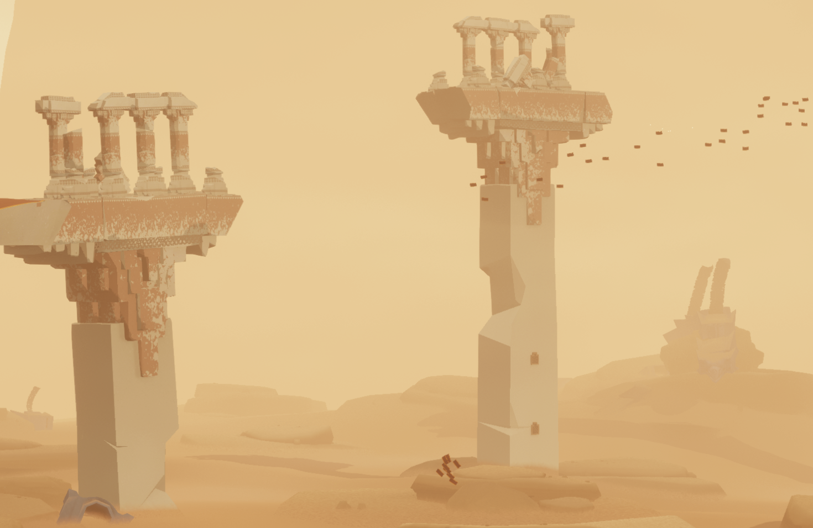
it's not absurd, it's not out of nowhere, it is a deliberate act of my freedom
of expression, of my free will of my omnipresent being, denying what needs to be
denied, stoping what needs to be stopped and begin life ignoring everything, ignoring
the ambition consumming my heart, people who have lots always want more, and it feels
good to ignore it and all it's bullshit, it feels good to relax, chill with the family
eat together in bed, fall asleep, and in the dreams surveil each other's force of will,
to simply test it with a small caress with a small kiss, it's not downward, it is all about
finding clouds and see how solid they are, is real in the sense of past present and future,
in the sense of feel the breeze, flow with it, fly and keep flying, and if im tired, just stop
flying and start running and don't stop running
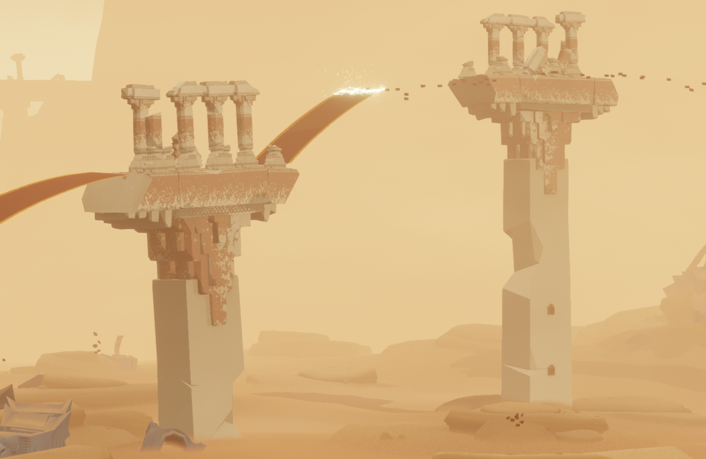
i sometimes make reflections, i sometimes stop to see them, like when i was a kid and will
travel to europe just ride the train to differrent places, to see how my life would evolve
through time, sometimes people will show me a visual padlock open and what was inside was
an interesting, or beautiful, or crazy, or amazing, like a train to nowhere to feel out of
the earth, out of my own eclipse, out of my mental instincts and become a human that feels
consciously because things are clear in my mind, there's no confusion about my drawings,
i draw my mom a princess because i wanted to marry her and be a couple but also be friends
to play with hot wheels cars all over the house, it's beautiful, they fly, its natural, its
something natural, its something special, and it will always be freedom, nobody can trap me
as crazy as it is to see a drawing moving outside the paper, nobody can trap them, when i'm
near them i feel safe, they are with me, i hear and we conversate, sometimes a bit of like,
forcing me to speak so that i can enjoy, theres this thing called "pogh" which is the verb for
"enjoy this adventure, its starting" its about using the spoon to eat the favourite salad of fruits
thing.
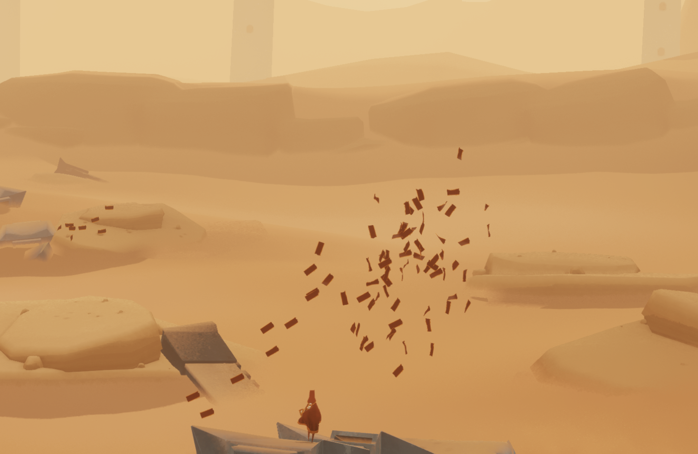
over and over the same answer, the same filling sigh out of a dream that has no ending,
it starts over and over, she offers her petals and my path grows i want to walk over to the moon
i don't want anything to stop me

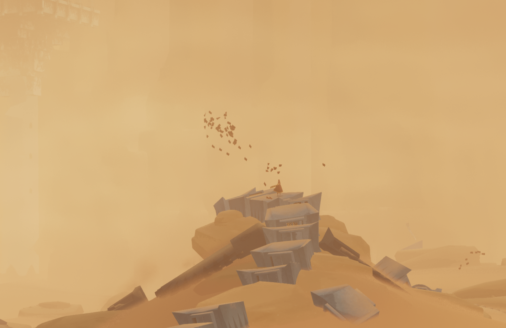
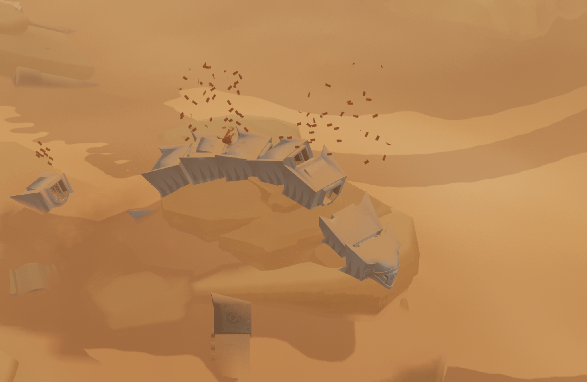
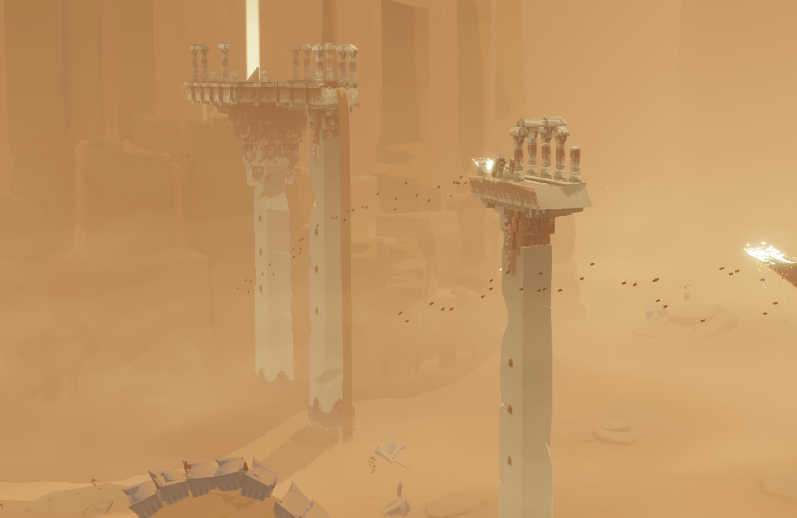
finding messages in the clouds, observing them, taking the shower during the storm, touching them, kissing, hugging, feeling you is something
beautiful, i need it daily, i believe so hard in the magic of the drawing that lady showed me, i think i will never
be able to explain the gratitude i have with her, i wish i could tell her my story and say "thank you", i wanted to
see her free, i wanted her as free as i am, but it's not about me following her it's about me leading journey and she
using divination to unveil the path we most follow, its like when i need someone to give me moral strength to keep trying
daily and she says where is our next move, that determination and certainty about the path is so special to me, i love you lady
of the garden, you are beautiful, you don't seem too free, but i will make a drawing and in my drawing you're my mother,
and we're married, because i gave you a fake plastic ring when i was 11 and you said bro im 30 you can't marry an adult, you can
marry a kid like you but insisted so much you ended up allowing me to be your husband, and we play cars, and planes, and
all the games we can invent, i love playing with things, it's lovely, its a refuge to rest of so many lights, let the first time be slow
no rush only love, no drinks only resting in bed, nothing to push nothing to pull, there's eevrything already here, and turning off
the lights and trying at night in the dark is an awesome crazy feel, i love it so much
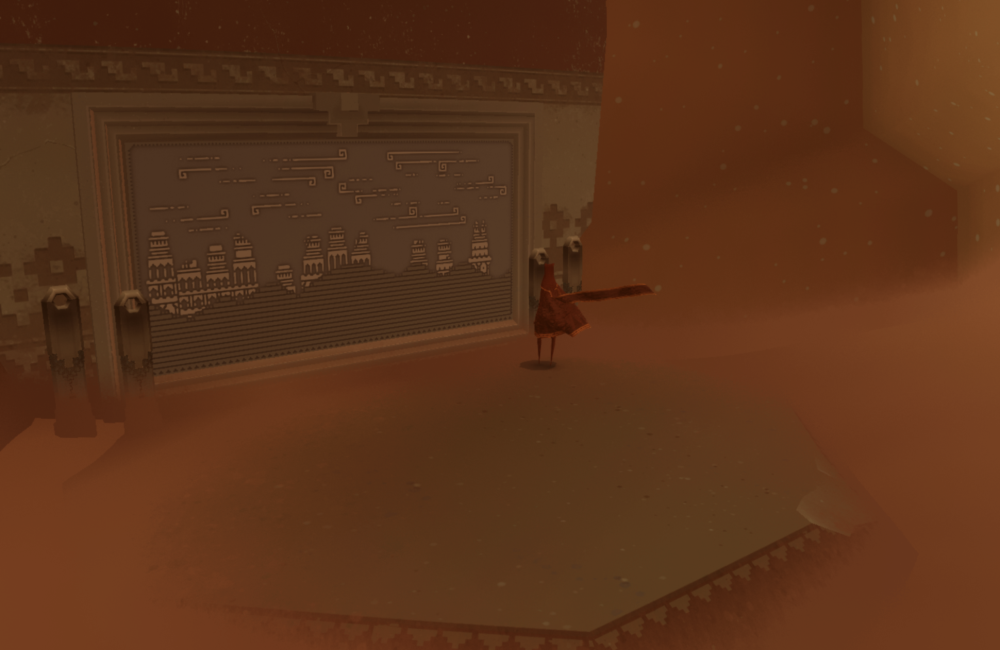
i want to sit down and make my kundalini session and hear the voice of the saints from the future,
they treat me like one of them, they clean the gum of my hair with one single expression, with one single word
they push me to live my life to the fullest, when i embrace light, when i embrace my heart, without feeling
betrayed, when the complicity of having a love game is never broken, when the link remains forever and i feel
embraced, when i feel i belong, when eevrything matches in the puzzle, when everything is ther for a reason,
when nobody punches me with a metallic bar to tag out of my daily battle against her ghosts to force me into
begin a fight with mine, when i tell her she me information first, that she is the reason i protect data, and my heart
is on front line because that is the drawing, that is part of the big picture and this time will be special because
i invented a theory in which nothing can erase it, "mom, can you imagine where i will be when im 20? im now 11"
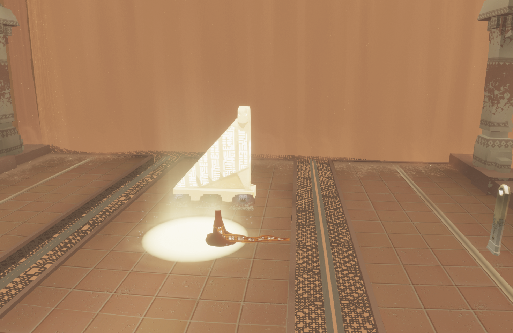
my name is part of the big leagues now, from time to time they contact me to say thank you, to talk about
my future, to talk about compassion, about forgiveness, about patience, about discipline and about feeling
free no matter the obstacles
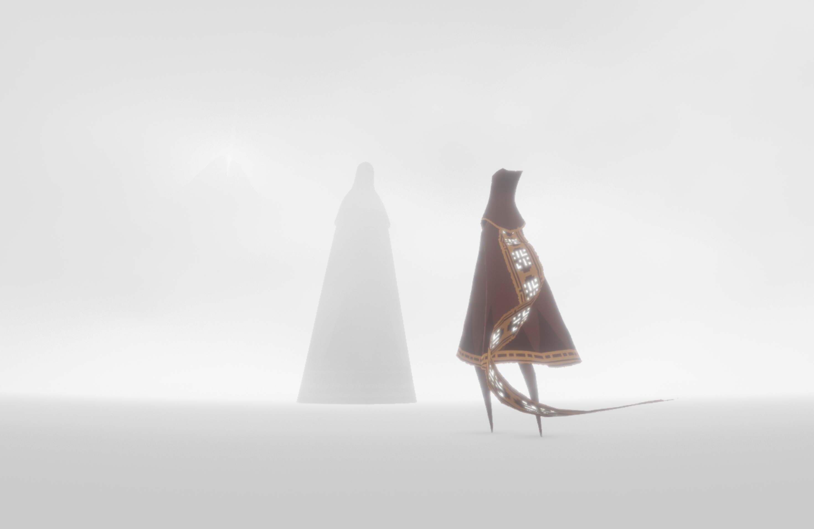
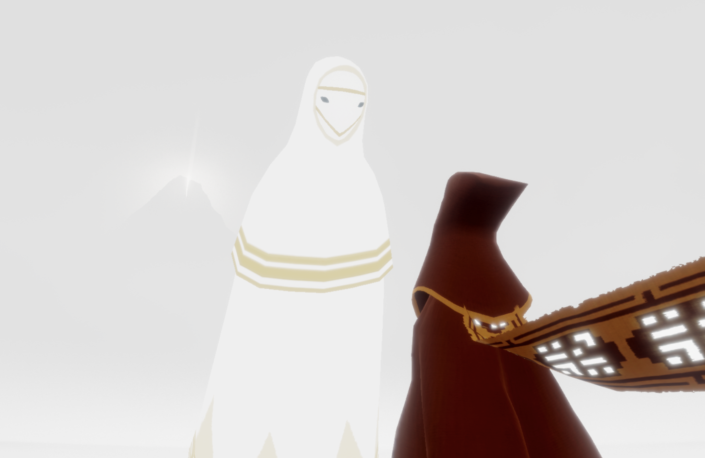
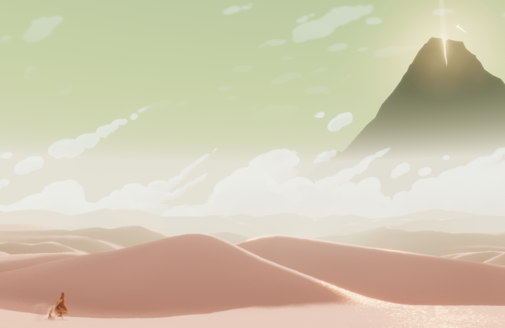
there's a star in the sky, that means someone died and is now ready to embrace the responsibilities beyond
our nature with the celestial bodies, a star that found the light and on it's way to infinity will touch
each soul on its path, and will bless us with it's light, with a sense of completeness, stating that we earn a body
and a life, through a complex task and at the same time, nature was conspiring, im gonna be a star like that one day
and i believe in resurection, we will be back somewhere else, and we will find the people we love and we will touch them
i wonder who it is, i hope it didn't hurt too much to become a star

im getting closer to the light, like we all do, we are one step closer to become a beautiful star in the sky...

"esperenme..."
To the moon and back